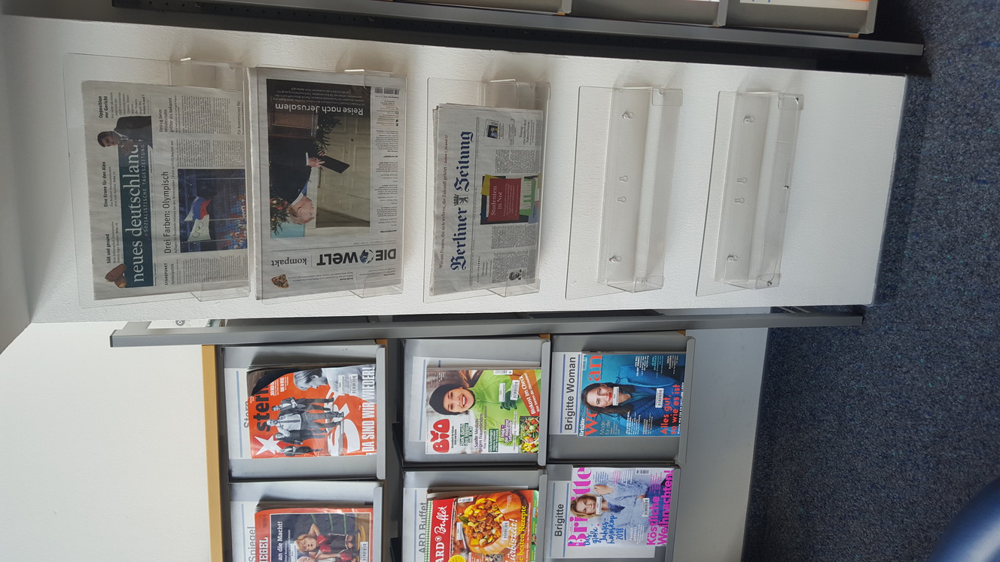
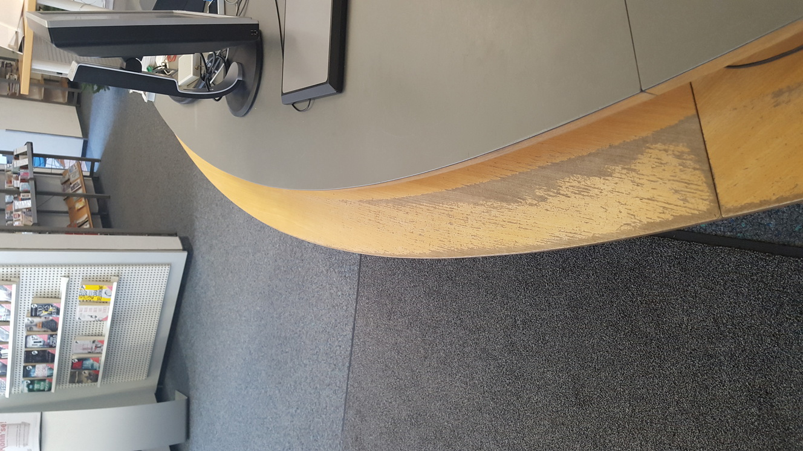

Zu sehen ist das Büro der Leitung. Als Leiter der Bibliothek verbringe ich dort die meiste Zeit, da viele Aufgaben einer Leitung in den Verwaltungsbereich (Geschäftsbereich, Statistik, Personal, Finanzen...) fallen.

Tages- und Wochenzeitungen würden mir fehlen, also wenn Nutzer*Innen kein knisterndes Geräusch beim Umblättern des Zeitungspapiers mehr erzeugten.

Hier ist ein kleiner Veranstaltungsraum zu sehen, der für Veranstaltungen mit Kitas sowie als Gruppenarbeitsraum genutzt wird. Der Bodenbelag ist noch Erstausstattung (1982) und müsste erneuert werden, wie andere Bereiche in der Einrichtung auch. Was in öffentlichen Bibliotheken nicht immer einfach zu realisieren ist.

Abgebildet ist die Ausleihtheke. Die Nutzer*Innen haben im Laufe der Jahre durch Taschen und Rucksäcke Spuren der Abnutzung hinterlassen.

Das Smartboard wird genutzt, um Kinder durch multimediale Anwendungen in die Bibliotheksnutzung einzuführen. Es eignet sich auch sehr gut für Bilderbuchkino (Onilo). Eine Anschaffung ist empfehlenswert.
Egon-Erwin-Kisch-Bibliothek, Frankfurter Allee 149, Berlin
Frank Englert, Leiter der Bibliothek